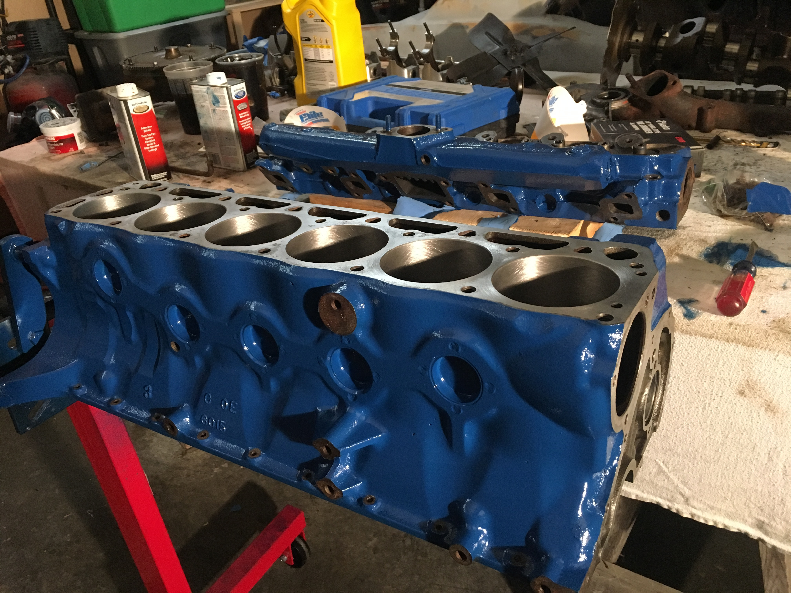
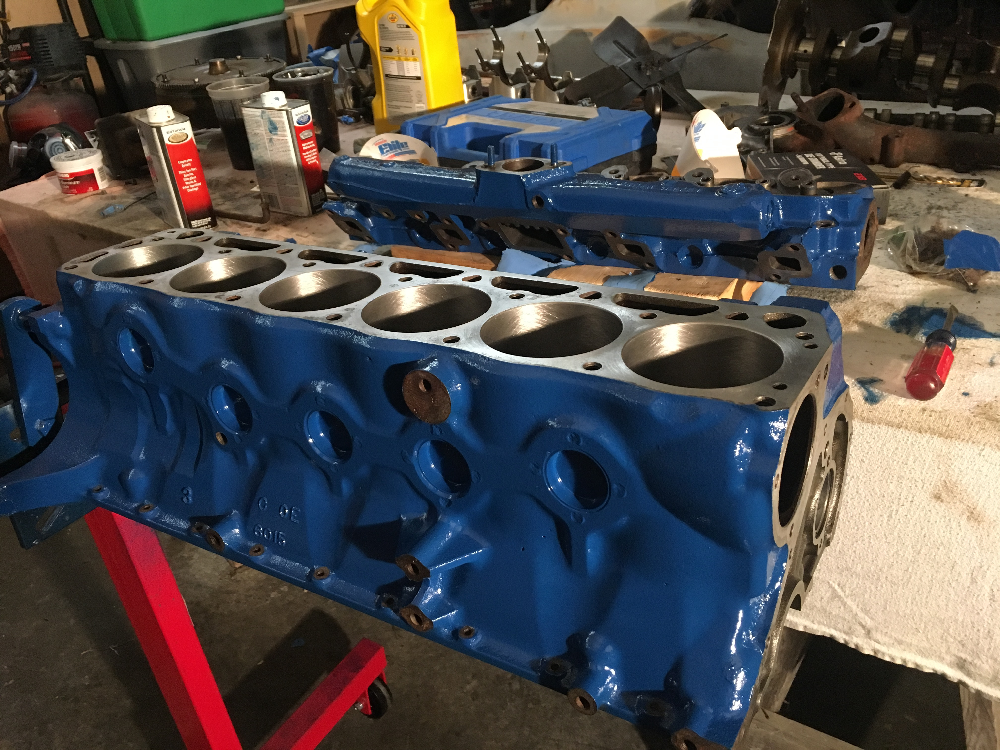

This is my 1966 Ford Mustang restoration project. I bought it in December 2016. It did not run at first, but since then I have fired it up and driven it(without any brakes..don't try this at home). I then disassembled it to the point where there were no nuts/bolts attached to the car; just the frame minus some.
I have been welding and doing body work for some time now, and am almost completed with welding. Engineering school and research have taken most of my time recently, but I love mechanic-ing!


 
